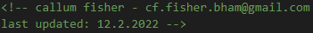
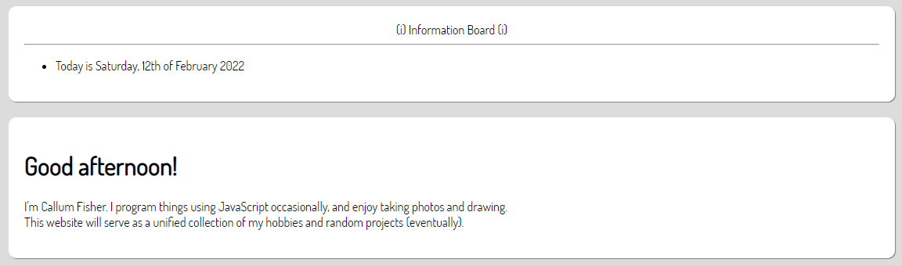
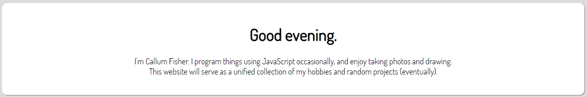

Website Changelog
Looking back on the progress of a project can be very satisfying. So, I'm creating this changelog to look back on in the future.
You can also see the old changelog for a list previous changes. But, it may be more confusing due to the lack of context behind some entries.
Note: changes to articles will not be recorded here.
3rd February 2022:
+ Began a new changelog.- Removed unused code for the old article viewer.
5th February 2022:
= Changed hyperlink colour in dark mode to be more readable.= Updated e-mail addresses in files.
- Removed the logo from the homepage. - Removed unused pages.
6th February 2022:
= Updated Easypea Games.12th February 2022:
= Updated e-mail addresses and dates in files for better consistency.
= Made the Directory (homepage) a bit sleeker: Centered the welcome text and merged the functions of the infoboard with the welcome text.
Old:

New:

2nd March 2022:
= Made the background colour in dark mode consistent with other UI elements.= Changed outdated e-mail addresses in some files.
13th March 2022:
= Moved styling for some buttons from HTML to stylesheets.= Made buttons more consistent and more visible.
- Removed the Articles page.
20th March 2022:
= Fixed buttons on old website changelog.= Improved button colours.
= Updated page titles.
12th April 2022:
= Changed favourites icon:= Rounded off the bottom edges of separators.
= Improved button colours in dark mode.
+ Created a new Projects page to document projects. I'll produce reports on all of my projects here.
13th April 2022:
= Fixed incorrect pixels in the favourites icon.= Changed some button colours.
+ Added a "Show credits" button to the Directory page.
20th April 2022:
= Shortened "Notes" sections of all pages.= Tidied up the credits.
21th April 2022:
+ Added extra separators between sections on some pages.= Fixed incorrect header sizes in "Notes" sections of all pages.
Go back to top